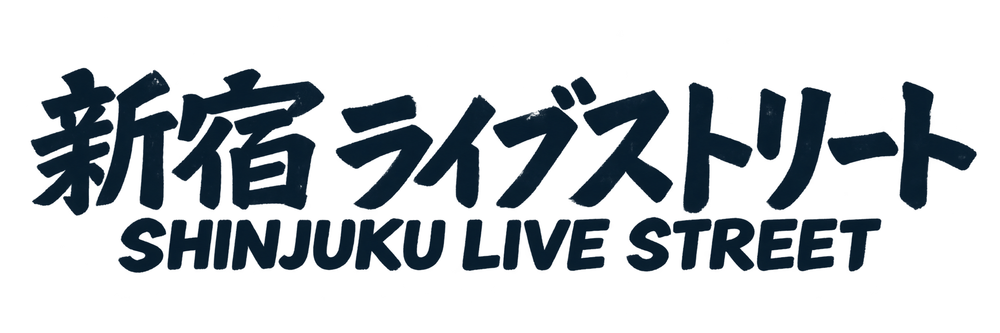

01 / 042024.04.10 —진행 중

차량이 오가는 신주쿠 거리를 배경으로, 직접 공연하거나 다른 사람의 공연을 즐길 수 있는 메타버스 공간입니다.
신호에 따라 흐르는 차량과 거리를 걷는 이용자들이 어우러져 도심의 현장감을 더합니다. 공연용 스피커로 음악을 틀고, 함께 모여 공연을 즐길 수 있습니다.
hjcud/Shinjuku-Live-Street문제 해결 과정
차량이 많을 때 발생하는 프레임 저하 줄이기
VRChat 월드에서는 전용 서버에 차량 계산을 맡길 수 없어, 한 참여자의 PC에서 차량 상태를 계산해 다른 사용자에게 전송했습니다. 이 PC는 화면 표시도 함께 처리해야 하므로, 차량의 이동 계산과 반복되는 주변 검사가 프레임 저하의 원인이 됐습니다.
이를 해결하기 위해 차선 경로를 미리 저장하고, 앞차와 정지선까지의 거리는 계산으로 구했습니다. 사람과 장애물만 검사하고, 차량별 검사는 프레임마다 분산해 계산 부담을 줄였습니다.
평균 CPU 프레임 시간
측정 조건
- 측정 환경
- 동일 PC의 Unity Editor
- 장면 규모
- 차량 10대, 가상 플레이어 80명
- 측정 범위
- 개선 전후 각 300프레임
여러 구조 변경을 함께 적용한 결과이며, 비교 장면은 원리 설명용 재현입니다.
32.4% 감소
실제 월드의 도로 좌표와 감지 및 회피 흐름을 반영한 설명용 웹 시연입니다. 보행자의 갑작스러운 진입과 교통량, 움직임은 설명을 위해 구성했으며, 시뮬레이션은 3배속으로 재생됩니다.
실제 로직을 반영한 교통 시뮬레이션
기술 개선과 최적화
차선의 위치와 방향을 미리 저장
차량마다 반복하던 계산을 줄이기 위해 위치와 방향을 미리 저장했습니다. 주행 중에는 이동 거리로 저장된 값을 찾아 사용합니다.
거리 계산과 감지를 함께 써서 검사 줄이기
앞차와 정지선은 차선 정보로 거리를 구할 수 있어, BoxCast로 다시 검사할 필요가 없었습니다. 거리 계산과 감지를 결합해 사람과 장애물에만 감지 검사를 사용했습니다.
길이 막히면 먼저 정지합니다. 뒤 공간과 옆 차선이 비어 있을 때만 후진해 공간을 확보한 뒤 차선을 바꿉니다.
차량 검사를 한 프레임에 몰아 하지 않기
한 PC에서 차량 계산과 화면 표시를 함께 처리하므로, 검사가 한 프레임에 몰리지 않도록 했습니다. 차량 2대씩 차례로 검사해 프레임별 부담을 나눴습니다.